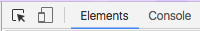
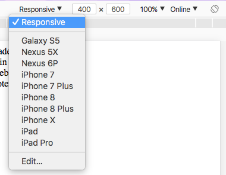

Responsive design is the practice of designing websites that change style and layout to fit a variety of devices with different dimensions, screen densities and functionalities to create an optimal viewing experience based on a single template. In responsive design, the rules will move fluidly between sizes, applying new properties for each style rule.
Like responsive design, adaptive design changes based on screen size and density, but adaptive design generally pinpoints specific breaking points or thresholds and creates designs for those points.
Both concepts are rooted in the idea of progressive enhancement, the idea that websites should be designed to provide the basic content to any device, while progressively introducing enhanced design possibilities for modern devices.
Progressive enhancement starts with the content of the site, then adds visual design, and finally user interaction on top.
To implement Mobile and Tablet sized wireframe designs, we will use media queries in CSS to set breakpoints in terms of pixel dimensions (in device width) to change the layout.
Media Queries are like extra style sheets that let us rewrite the original style rules based on device properties.
First, let's establish a maximum width for our content. This doesn't require a media query, we'll just add a couple of rules to the #container.
#container {
max-width: 960px;
margin: 0 auto;
}This establishes the maximum width of our page at 960px.
This dimension is arbitrary. Your max width should be based on the content on the page.
The margin rule is there to center the container.
We also need to add a new meta tag to set the viewport.
<meta name="viewport" content="width=device-width, initial-scale=1">This tells the browser not to resize or scale the content based on the device. Some browsers do this by default to load the desktop version of the site at a viewable scale. We're telling the browser that we are handling this in our CSS.
You will often see media queries based on the most popular sizes of various devices, such as the iPhone, iPad, laptop and desktop sizes. This may be a good place to start but it's not necessarily going to work for all types of content.
A better approach to design around the content that will be on the site. This requires writing media queries based on tests rather than pre-described defaults.
For the sake of simplicity, let's choose 2 break points for mobile, 400px and tablet, 600px.
@media (max-width: 400px) {
/* mobile style rules */
}
@media (min-width: 401px) and (max-width: 600px) {
/* tablet style rules */
}The relationship between rules matter. For example, in the second media query, we need to start at min-width and define a range to max-width. Without that beginning point, this media query would replace the one that comes directly before it.
The first media query only needs a max-width rules because there is nothing smaller targeted.
Anything larger than 600px will be handled by the original style rules.
Now that we have targeted two device sizes, let's start by changing the layout for mobile.
Keep in mind we can rewrite as many or as few styles as are necessary to complete the changes we're looking for.
For the mobile version, let's simplify our grid by changing the overall number of columns and moving the #sidebar to it's own row.
After we figure out the rules, we can test the mobile version before publishing using the mobile preview in Chrome. It's not enough to just drag the browser width in and out to test responsive layouts. Chrome has a mobile device emulator setting in the dev tools. Let's take advantage of it.
Open
Click on the icon in the Toolbar that looks like a mobile phone:
You will see the content size change and a new menu appear with mobile parameters to set the width and height or choose specific devices:
Dragging or setting different sizes is one way to see how the layout changes, but its preferable to set a specific size and reload the page. This is how most users will actually be loading the content. Users will rarely be resizing their pages (unless they need to because our content doesn't update correctly).
Another way to change our grid is using grid-template-areas. This adds a semantic dimension to creating layouts.
Template grids allow us to position the content on the page irrespective of the order it appears in HTML.
This could be achieved with grid and row numbers, but template-areas allow us to do this using named areas and moving them around without necessarily have to count through all of the units each time.
#container {
display: grid;
grid-template-columns: repeat(3, 1fr);
grid-template-rows: 4em 10em max-content;
grid-template-areas:
"header header header"
"main main sidebar"
"footer footer footer";
max-width: 960px;
margin: 0 auto;
}#header {
grid-area: header;
}
#main {
grid-area: main;
}
#sidebar {
grid-area: sidebar;
}
#footer {
grid-area: footer;
}@media (max-width: 400px) {
#container {
grid-template-areas:
"header header header"
"sidebar sidebar sidebar"
"main main main"
"footer footer footer";
}
}